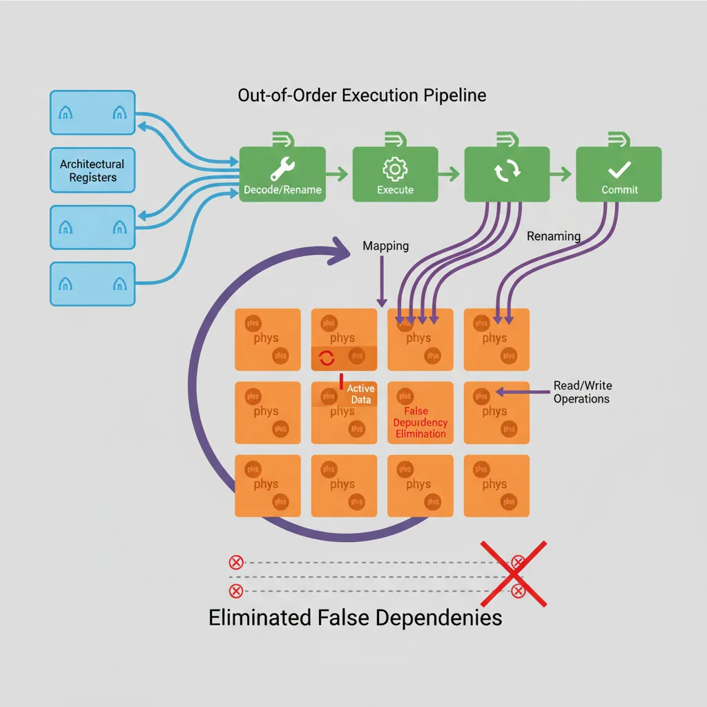
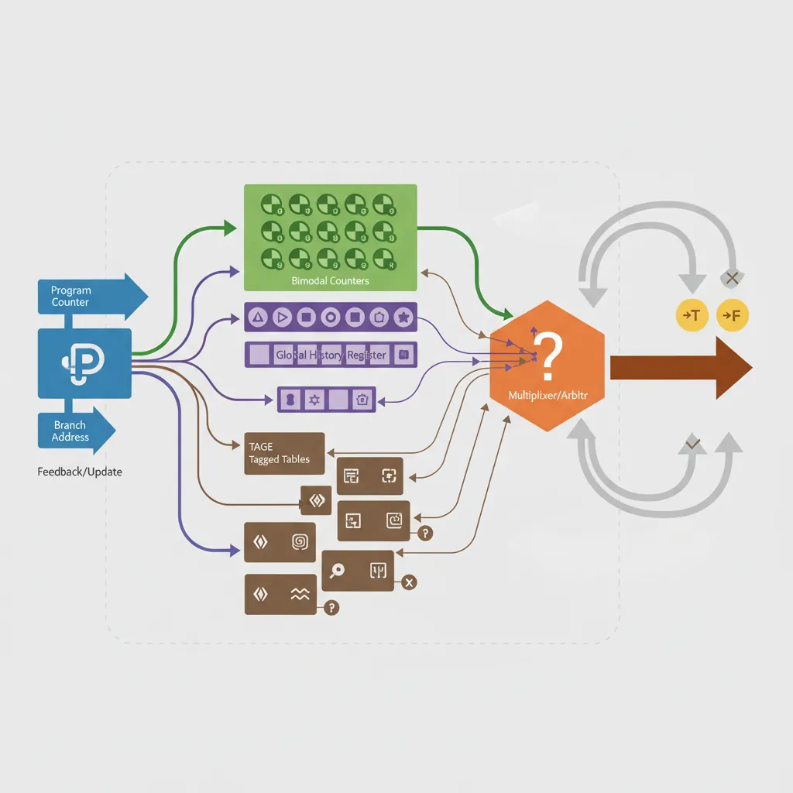
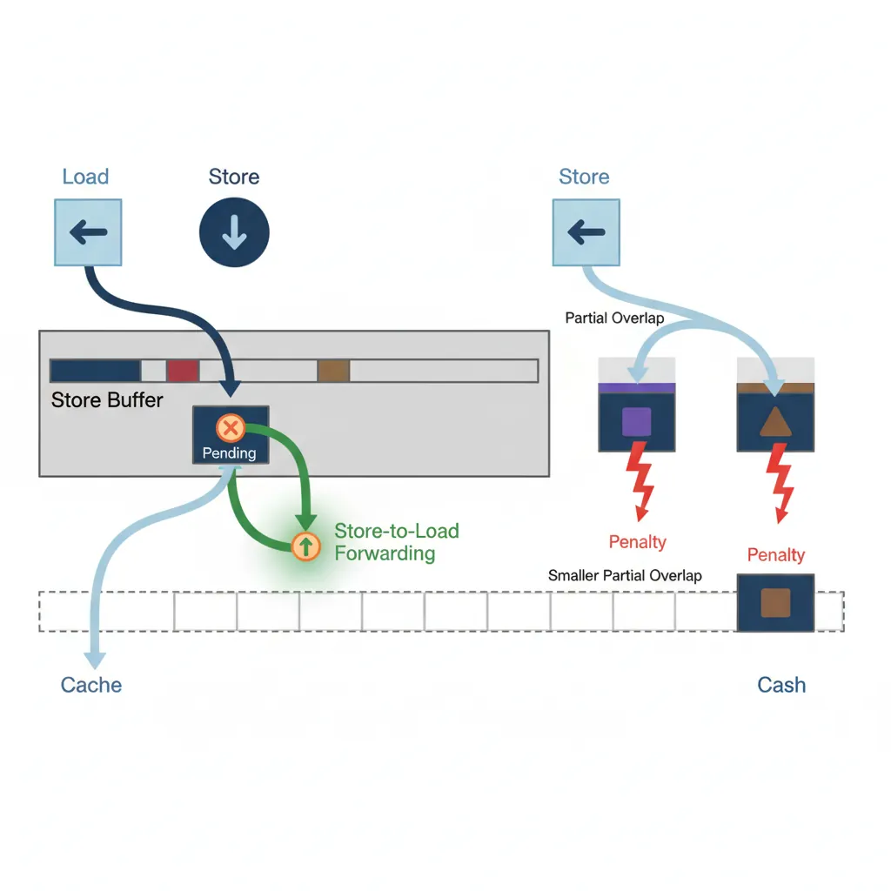
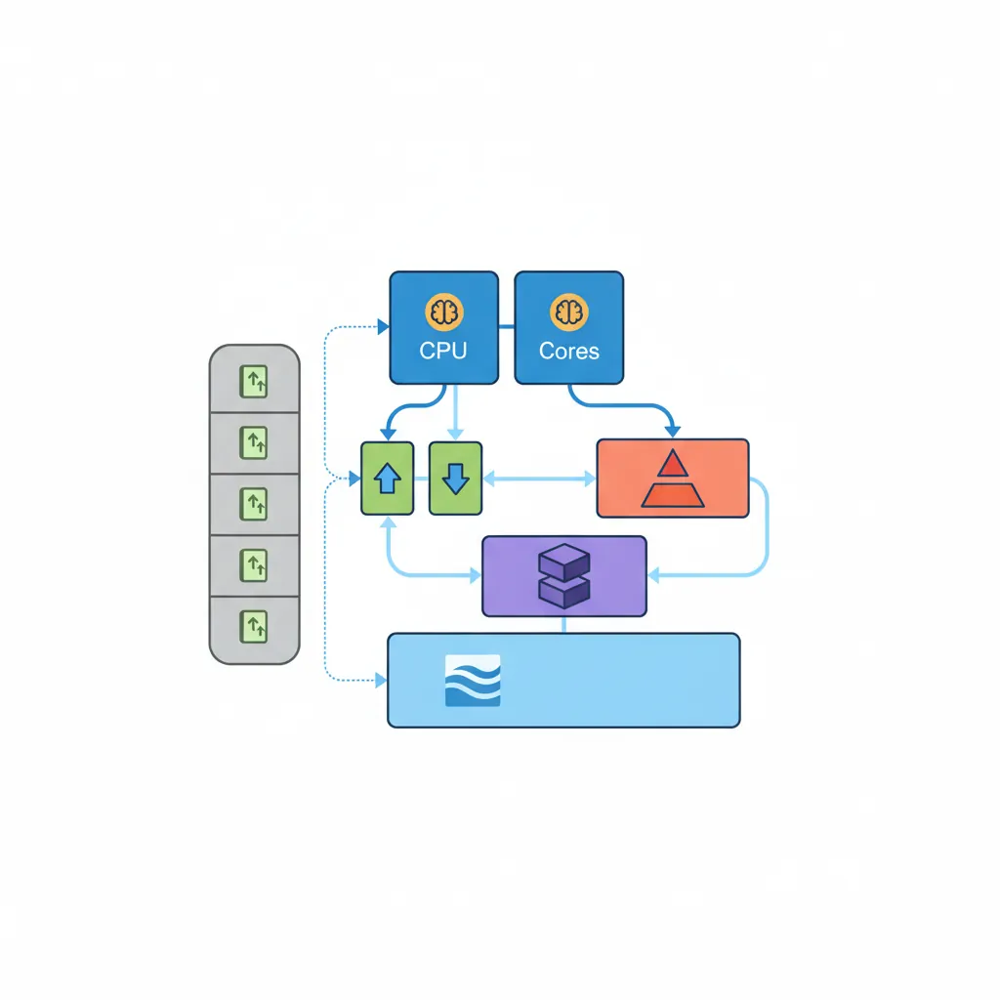
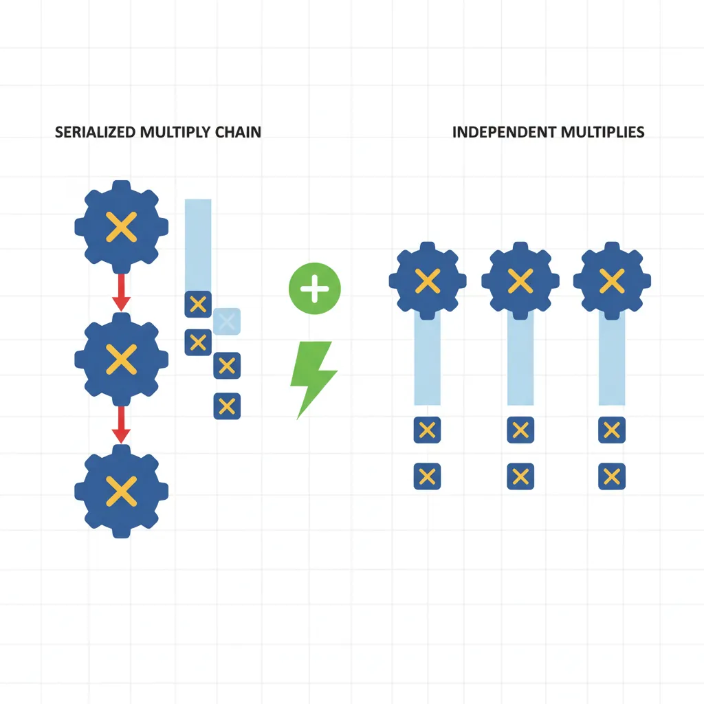

Pipeline Overview
ARM Assembly Mastery
Architecture History & Core Concepts
ARMv1→v9, RISC philosophy, profilesARM32 Instruction Set Fundamentals
ARM vs Thumb, registers, CPSR, barrel shifterAArch64 Registers, Addressing & Data Movement
X/W regs, addressing modes, load/store pairsArithmetic, Logic & Bit Manipulation
ADD/SUB, bitfield extract/insert, CLZBranching, Loops & Conditional Execution
Branch types, link register, jump tablesStack, Subroutines & AAPCS
Calling conventions, prologue/epilogueMemory Model, Caches & Barriers
Weak ordering, DMB/DSB/ISB, TLBNEON & Advanced SIMD
Vector ops, intrinsics, media processingSVE & SVE2 Scalable Vector Extensions
Predicate regs, gather/scatter, HPC/MLFloating-Point & VFP Instructions
IEEE-754, scalar FP, rounding modesException Levels, Interrupts & Vector Tables
EL0–EL3, GIC, fault debuggingMMU, Page Tables & Virtual Memory
Stage-1 translation, permissions, huge pagesTrustZone & ARM Security Extensions
Secure monitor, world switching, TF-ACortex-M Assembly & Bare-Metal Embedded
NVIC, SysTick, linker scripts, low-powerCortex-A System Programming & Boot
EL3→EL1 transitions, MMU setup, PSCIApple Silicon & macOS ABI
ARM64e PAC, Mach-O, dyld, perf countersInline Assembly, GCC/Clang & C Interop
Constraints, clobbers, compiler interactionPerformance Profiling & Micro-Optimization
Pipeline hazards, PMU, benchmarkingReverse Engineering & ARM Binary Analysis
ELF, disassembly, CFR, iOS/Android quirksBuilding a Bare-Metal OS Kernel
Bootloader, UART, scheduler, context switchARM Microarchitecture Deep Dive
OOO pipelines, reorder buffers, branch predictVirtualization Extensions
EL2 hypervisor, stage-2 translation, KVMDebugging & Tooling Ecosystem
GDB, OpenOCD/JTAG, ETM/ITM, QEMULinkers, Loaders & Binary Format Internals
ELF deep dive, relocations, PIC, crt0Cross-Compilation & Build Systems
GCC/Clang toolchains, CMake, firmware genARM in Real Systems
Android, FreeRTOS/Zephyr, U-Boot, TF-ASecurity Research & Exploitation
ASLR, PAC attacks, ROP/JOP, kernel exploitEmerging ARMv9 & Future Directions
MTE, SME, confidential compute, AI accelOut-of-Order Execution
Register Renaming
The architectural register file (X0–X30) is far too small to hold the inflight work of a wide OOO core. A physical register file (PRF) of 128–256 entries is allocated dynamically. The rename stage maps each destination register write to a fresh PRF entry, eliminating WAR (Write-After-Read) and WAW (Write-After-Write) hazards while preserving true RAW (Read-After-Write) data dependences.

// Visible code — appears serial:
MUL X1, X2, X3 // WAW: both write X1 ... but after renaming →
ADD X1, X4, X5 // MUL → PRF[p47], ADD → PRF[p48] (no conflict)
// RAW hazard (cannot rename away):
SDIV X0, X6, X7 // Long latency (≥12 cycles on A78)
ADD X8, X0, X1 // Must wait for SDIV result in PRF[p47]Reorder Buffer (ROB)
Instructions are inserted into the ROB in program order at dispatch. They can execute out of order — the ROB records which have completed — but they commit (become visible state) only in program order from the head of the ROB. This is what makes precise exceptions possible: any instruction that faulted can be identified because nothing past it has committed.
Cortex-A55: ~32 entry ROB (in-order up to decode, OOO from issue). Cortex-A78: ~160 entry ROB. Neoverse N2: ~400 entry ROB. Apple Firestorm: ~620 entry ROB — the largest ROB publicly known (2023), enabling deep memory-level parallelism.
Reservation Stations & Execution Ports
// Cortex-A78 issue queues (approximate per ARM TRM):
// IQ0 (integer ALU, shift, CSEL): 4 entries × 2 pipes → 2 ALU/cycle
// IQ1 (multiply, divide): 2 entries × 1 pipe → 1 MUL/cycle
// IQ2 (load): 12 entries × 2 pipes → 2 loads/cycle
// IQ3 (store): 8 entries × 1 pipe → 1 store/cycle
// IQ4 (NEON/FP): 8 entries × 2 pipes → 2 NEON/cycle
// Throughput-limiting example: 4 dependent multiplies, 1 cycle each
MUL X4, X0, X1 // Uses MUL pipe (1 cycle latency approx)
MUL X5, X2, X3 // Independent → can dual-issue if separate src regs
MUL X6, X4, X5 // Depends on X4 and X5 → must wait → serialised
MUL X7, X6, X3 // Depends on X6 → more serialisation
// Solution: expose more independent chains (see Part 18, multiple accumulators)Branch Prediction
Bimodal & Two-Level Predictors
A bimodal predictor is a table of 2-bit saturating counters indexed by PC bits. Two-level (correlated) predictors index the counter table with a combination of the PC and the Global History Register (GHR), a shift register of the last N branch outcomes. The GHR captures correlation patterns like "this branch is always taken if the last three were also taken."

// Branch that aliases in a bimodal predictor (same PC bits, different ctx):
// Two calls to same function with different condition chains → predictor thrashes
// Solution: pad hot inner loops with NOPs or use PRFM for instruction cacheTAGE Predictor
Tagged GEometric history length (TAGE) uses a base bimodal table plus K tagged tables indexed by hash(PC, GHR[0:2^k−1]). The longest history that hits provides the prediction. A "use-count" meta-predictor arbitrates ties. Cortex-A78 and Neoverse N2 implement variants of TAGE achieving >98% accuracy on SPECint workloads.
Branch Target Buffer (BTB) & Return Address Stack (RAS)
// BTB Miss: indirect branch (BR Xn) where target changes frequently
// Triggering BTB miss costs ~20 cycles pipeline flush on A78
// Perf event: 0x010 = BR_MIS_PRED
mrs x0, pmcr_el0
// ... configure PMU event 0x010 as in Part 18 ...
// Indirect call via function pointer (high BTB miss rate if target varies):
BLR X9 // BTB must predict X9 content — if wrong: flush + refetch
// Static indirect branches (e.g. switch jump table): BTB usually correct after warmup
// Dynamic virtual dispatch: 1 call site → many targets → BTB capacity exhausted
// RAS (Return Address Stack, ~16–32 deep):
BL func // Pushes PC+4 onto RAS
...
func:
...
RET // Pops RAS → correct most of the time (mismatch on longjmp/setjmp)Memory Subsystem
Store-to-Load Forwarding
A store writes to the store buffer (not directly to cache). A subsequent load to the same address is fulfilled from the store buffer — this is store-to-load forwarding. It avoids the cache latency when the data is still "in flight." However, partial overlaps (e.g., write 8 bytes, read 4 bytes misaligned) cause a forwarding bubble of ~4–8 extra cycles.

// Perfect forwarding: same address, same size → data from store buffer
STR X0, [X1] // Write X0 to [X1]
LDR X2, [X1] // Forwarded from store buffer: ~4 cycle latency vs ~12 cache hit
// Forwarding failure: partial overlap
STR W0, [X1] // Write 4 bytes to [X1]
LDR X2, [X1] // Read 8 bytes from [X1] — only 4 overlap → forwarding stall
// Common kernel bug: write byte, read word (struct alignment pitfall)
STRB W0, [X1] // 1-byte store
LDR W2, [X1] // 4-byte load → partial overlap → ~10 cycle penalty on A78Memory Dependence Speculation
ARM OOO cores speculate that loads do not alias most stores. If a load is issued early and a later-dispatched store has the same address, the core detects the violation at commit time, flushes the load (and everything dispatched after it), and re-executes. The PMU event 0x074 = MEM_ACCESS_LD and the perf stat metric memory_bound reveal when this is expensive.
Cache & TLB Architecture
// Query cache parameters at runtime (ARM CTR_EL0):
// CTR_EL0[19:16] = L1 instruction cache line size (log2 words)
// CTR_EL0[3:0] = L1 data cache line size (log2 words)
mrs x0, ctr_el0
ubfx x1, x0, #16, #4 // Extract ICache line size field
mov x2, #4
lsl x3, x2, x1 // Cache line = 4 << field (bytes)
// On A78: CTR_EL0 = 0x84448004 → L1D line = 64 bytes, L1I line = 64 bytesL1I: 64 KB, 4-way set-assoc, 64-byte lines, 4-cycle hit
L1D: 32 KB, 4-way set-assoc, 64-byte lines, 4-cycle hit
L2 (per core): 256 KB–512 KB, 8-way, 12-cycle hit
L3 (shared): 4–8 MB, 16-way, 30–40 cycle hit
DRAM: 200–300 cycles (DDR5 at 5600 MT/s)

Prefetchers
// Hardware prefetcher types (all implicit, cannot be disabled via ISA):
// 1. Next-line: always fetch the next cache line after a miss
// 2. Stride: detect constant-stride access patterns
// 3. Stream: detect sequential streams, issue ahead-of-time prefetch
// Software prefetch (explicit, from Part 18):
PRFM PLDL1KEEP, [X0, #256] // Prefetch 4 cache lines ahead into L1D
PRFM PLDL2KEEP, [X0, #512] // Prefetch into L2 (for long loops)
// PRFM hint types:
// PLDL1KEEP = load, L1, keep (non-evict hint)
// PSTL1KEEP = store, L1, keep — prefetch for write (allocate clean line)
// PLDL3STRM = load, L3, stream (evict-soon hint — scratchpad pattern)TLB Structure & Shootdown
// TLB Miss: triggers full page table walk (50–200 cycles!)
// TLBI (TLB Invalidate) instructions:
TLBI VMALLE1IS // Invalidate all EL1 translations (inner-shareable)
TLBI VAE1IS, X0 // Invalidate EL1 by virtual address (X0 >> 12 = VA/4KB)
TLBI ASIDE1IS, X0 // Invalidate all entries with ASID in X0[63:48]
DSB ISH // Ensure TLB invalidation visible to all observers
ISB // Flush pipeline after TLB change
// TLB shootdown on SMP: each core running threads of the same process
// must invalidate TLBs when a mapping changes. IS (Inner-Shareable) suffix
// broadcasts the TLBI to all cores in the same inner-shareable domain.Core Comparison
Cortex-A55 (efficiency core used in DynamIQ clusters): In-order up to dispatch; 2-wide decode; 8-entry issue queue; 32-entry ROB equivalent; ~1.9 IPC at peak; sub-1W active power. Designed for background tasks and always-on workloads.
Cortex-A78 (performance core, 2020–2023 smartphones): 4-wide decode; 160-entry ROB; 6 execution ports; 2 load + 1 store / cycle; TAGE branch predictor; 3.6 IPC peak; ~2.5W TDP in 5 nm silicon.
Neoverse N2 (server, 2022+): 4-wide decode; 400-entry ROB; 8 execution ports; 3 load + 2 store / cycle (SVE adds vector load/store ports); CHI interconnect for cache coherence at rack scale; ~4.0 IPC peak; 10W+ TDP.
Assembly Implications
// ── Rule 1: Break dependence chains for ILP ──
// Bad: chain of 4 multiplies → 1 result/4 cycles
MUL X0, X1, X2
MUL X0, X0, X3
MUL X0, X0, X4
MUL X0, X0, X5
// Good: 4 independent multiplies → 4 results/1 cycle (wide issue)
MUL X0, X1, X2
MUL X6, X3, X4
MUL X7, X5, X8
MUL X9, X10, X11
// Then merge: MUL X12, X0, X6 / MUL X13, X7, X9 / MUL X0, X12, X13
// ── Rule 2: Avoid indirect branch thrash → prefer direct branches ──
// VTable dispatch: BLR Xn — poor BTB predictions when targets vary
// Alternative: inline or devirtualise in hot paths// ── Rule 3: Align hot loop head to I-Cache line boundary ──
.balign 64 // 64-byte = L1I cache line on A78
.loop_head:
LDP X0, X1, [X2], #16
LDP X3, X4, [X2], #16
// ... loop body ...
B.NE .loop_head// ── Rule 4: Separate store and load to same address ──
STR X0, [X1]
// Insert ~4 independent instructions here to allow forwarding pipeline
ADD X5, X6, X7 // Fill cycle 1
ADD X8, X9, X10 // Fill cycle 2
ADD X11, X12, X13 // Fill cycle 3 (A78 forwarding latency ≈ 4)
LDR X2, [X1] // Now forwarding hits clean without stallCase Study: Apple M1 vs Cortex-X2 — Two Takes on Wide OOO
How Different Design Philosophies Yield Different Results
When Apple's M1 (Firestorm cores) launched in 2020, it shattered ARM performance expectations. Its microarchitecture makes a fascinating comparison to ARM's own Cortex-X2 (2022):
| Parameter | Apple Firestorm (M1) | Cortex-X2 |
|---|---|---|
| Decode Width | 8-wide | 5-wide |
| ROB Size | ~630 entries | ~288 entries |
| Integer ALU Ports | 6 | 4 |
| Load/Store Ports | 3 Load + 2 Store | 2 Load + 2 Store |
| L1D Cache | 128 KB, 8-way | 64 KB, 4-way |
| L2 Cache (per core) | 12 MB shared (perf cluster) | 512 KB–1 MB |
| Power Target | ~10W (perf cluster) | ~3W (single core) |
Key insight: Apple's advantage comes from being both the chip designer and the only customer — they can afford a 630-entry ROB and 128 KB L1D because they control the thermal design of the MacBook chassis. ARM's Cortex-X2 must work across dozens of Android phones with different thermal budgets, forcing a more conservative design. The lesson: microarchitecture trade-offs are inseparable from the system they ship in.
Performance impact: On SPEC CPU 2017, Firestorm's wider issue and larger ROB deliver ~15–20% higher single-thread IPC than X2, but X2's smaller area allows more cores per cluster. In server workloads (Neoverse N2), throughput per watt matters more than single-thread speed, so ARM chose a 4-wide balanced design instead.
From StrongARM to Neoverse: 30 Years of ARM Microarchitecture
ARM microarchitecture has evolved through distinct generations:
- 1996 — StrongARM (DEC, then Intel): The first high-performance ARM core. 5-stage in-order pipeline, 233 MHz, 1W. Proved ARM could compete on performance, not just power.
- 2005 — Cortex-A8: ARM's first superscalar core. 2-wide in-order, dual-issue integer. Powered the original iPhone (2007) and Kindle.
- 2011 — Cortex-A15: ARM's first fully out-of-order core. 3-wide decode, ~100-entry ROB. The architecture that made ARM credible for servers (Calxeda, Applied Micro).
- 2018 — Cortex-A76 ("Enyo"): 4-wide OOO, 128-entry ROB, micro-op cache. Closed the gap with Intel mobile Core i5. Basis for Neoverse N1 (AWS Graviton2).
- 2022 — Neoverse V2: 5-wide decode, SVE2, 400+ ROB, CHI mesh interconnect. Powers Graviton4 and Microsoft Cobalt — ARM's entry into datacenter dominance.
Each generation roughly doubled ROB size and added 1–2 execution ports, a pattern constrained by the cubic relationship between power and OOO window size.
Hands-On Exercises
Measure ROB Depth via Dependency Chain
Empirically estimate your CPU's ROB size by measuring when independent instruction throughput drops:
- Write a loop containing N independent
ADD Xn, Xn, #1instructions (each writing a different register), followed by a single long-latencySDIVwhose result is consumed by the next iteration's first ADD - Increase N from 10 to 300 in steps of 10. Time 10 million iterations of each
- Plot cycles/iteration vs N. While N < ROB depth, the independent ADDs fill the ROB and overlap with the SDIV. Once N exceeds the ROB, dispatching stalls — the curve flattens
- The "knee" of the curve approximates the ROB size
Expected: On Cortex-A78, the knee should appear around N=150–160. On Apple M-series, around N=600+.
Branch Predictor Stress Test
Design a benchmark that defeats TAGE prediction:
- Create an array of 256 random 0/1 values (unseeded random — different each run)
- Loop through the array; for each element, execute
CBZ/CBNZto branch into one of two code paths - Measure total cycles and branch mispredictions using PMU events
0x10 (BR_MIS_PRED)and0x12 (BR_PRED) - Compare against a sorted version of the same array (all 0s then all 1s) — mispredictions should drop to near-zero
Analysis: Calculate misprediction rate for random vs sorted. Typical results: ~45-50% miss rate on random (worse than coin flip due to aliasing), <1% on sorted.
Store-to-Load Forwarding Latency Measurement
Measure the difference between forwarded and non-forwarded loads:
- Write a tight loop:
STR X0, [X1] / LDR X2, [X1](same address, same size — perfect forwarding). Time 100M iterations using cycle counter - Modify to misaligned partial overlap:
STR X0, [X1] / LDR W2, [X1, #2](4-byte load at 2-byte offset into 8-byte store). Time again - Modify to complete miss:
STR X0, [X1] / LDR X2, [X3]where X3 points to a different cache line - Calculate: forwarding latency, partial-overlap penalty, and L1D hit latency (from the miss case)
Expected on A78: ~4 cycles (forwarded), ~10-12 cycles (partial overlap), ~4 cycles (L1D hit, no forwarding — same if data is warm in cache).
Conclusion & Next Steps
The Cortex-A78 represents the intersection of every concept in the series: ISA constraints shape what rename can do, weak memory ordering emerges from the store buffer design, and cache line boundaries determine when PRFM helps. Every assembly optimization from Part 18 maps to a physical circuit now visible in this part. The Apple M1 vs Cortex-X2 comparison shows how system-level constraints drive wildly different microarchitectural choices from the same ISA, and the exercises let you probe these mechanisms empirically by measuring ROB depth, branch predictor accuracy, and forwarding latency on real hardware.
Next in the Series
In Part 22: Virtualization Extensions, we enter EL2, write trap handlers, configure stage-2 page tables for guest memory isolation, wire virtual GIC list registers, and understand how KVM on ARM implements hardware-accelerated virtual machines.